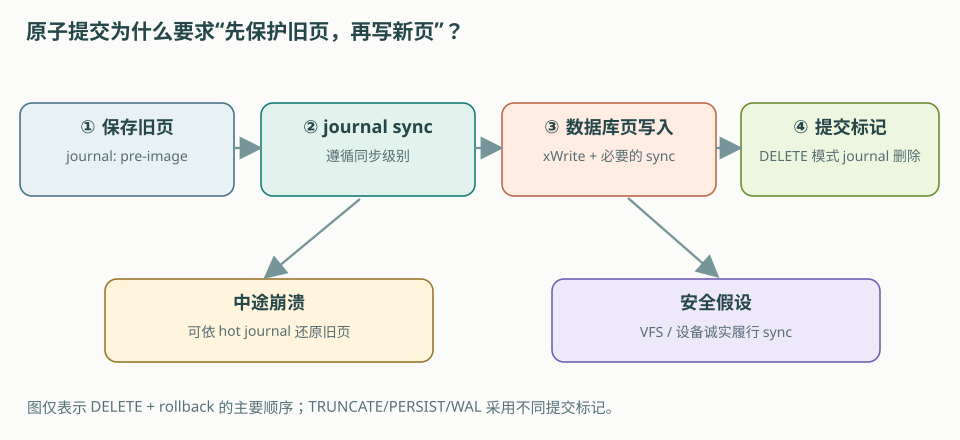
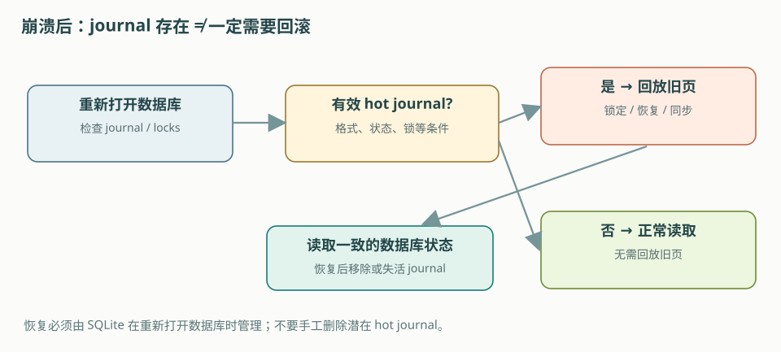
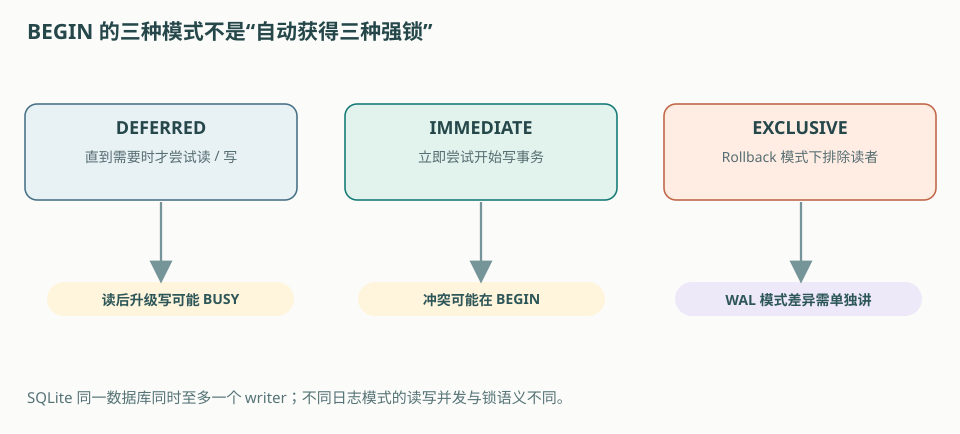

原子提交与事务：从旧页镜像到崩溃后恢复
什么使一次 COMMIT 看起来不可分割？本章聚焦传统 DELETE 回滚日志的关键写入顺序、hot journal 恢复与读写锁，并明确 WAL 是另一套提交协议。
1. 一次事务改了三页，突然断电会怎样？
设一条转账事务先减小 Alice 的余额，再增加 Bob 的余额。数据库不能出现“只扣了 Alice 一笔”的持久最终状态，这就是原子性的基本诉求。但磁盘一般按扇区、页或设备缓存分别写入，不会因为 SQL 层是一条事务就变成一个瞬间的物理写入。
SQLite 的一种解决方案是 rollback journal：在修改主数据库页之前，先记录被修改页的原始内容；确保它满足必要的同步保证之后，主库的部分页面即使在崩溃前被写入，重启后也能回放原始页。

官方 Atomic Commit详细描述了这一协议以及它依赖的前提。这里不把“先写 journal 再写 database”简化成唯一一个函数调用或无条件持久化承诺；错误的 xSync、扇区假设和电源故障都可能破坏依赖条件。
2. Rollback journal 保存的是旧页，不是新 SQL 操作记录
Rollback journal 的主要使命是恢复修改之前的页面，它不是面向外部应用的 SQL redo 日志。典型 journal 包含头部、所记录的旧页编号及内容、必要的校验和等控制数据；事务前的数据库页数也会被保存，以便回滚涉及的文件扩展。
为什么写入顺序如此严格
- 写事务获得适当锁，标记哪些页将修改；
- 记录这些页的旧内容，按协议让日志成为可靠的恢复依据；
- 在满足日志保护条件后修改和同步主数据库文件；
- 通过让 journal 在逻辑上失效完成提交（在 DELETE 模式通常是删除文件）；
- 释放锁，允许其它连接观察结果。
并不是所有 SQL 写操作都必然生成大小完全相同的 journal：优化路径、已记录页集合、事务日志模式和同步配置会影响实际写入行为。PRAGMA journal_mode=TRUNCATE 或 PERSIST 使用不同的提交标记；WAL 更是直接采用另外的帧和提交记录协议。
synchronous 可能使事务无法兑现原本的掉电持久性保证。journal_mode=OFF 更会取消正常 rollback 保护，不能作为通用数据库性能建议。3. Hot journal：为什么“journal 文件存在”不等于需要回滚
假设电源在部分修改主库页之后丢失。下次 SQLite 打开数据库时，会检查是否需要恢复的 hot journal。这个判断涉及文件存在性、大小、头部有效性、相关数据库文件的锁和可能的 super-journal 关联，不是看到 *.sqlite-journal 就直接复制所有字节。

发现 hot journal 后，SQLite 会获得排他性恢复所需的锁，从日志中取出旧页并恢复；如未完成事务导致数据库文件被扩展，还需按保存的原文件长度裁剪。恢复过程同步主库后再清理/失效日志，避免再次崩溃导致不可恢复状态。细节详见 Atomic Commit §4。
崩溃测试为什么不等于手工删 journal
正确的崩溃一致性测试需要在受控 VFS/模拟电源故障条件下，在指定 I/O 边界停止、重启、恢复并校验数据库。随意 kill 一个进程只覆盖很小的时间窗口；手工删除 journal 更是可能摧毁恢复数据。本章的可运行示例验证事务回滚和连接隔离，并不冒充真正的断电故障注入测试。
4. DEFERRED、IMMEDIATE 与 EXCLUSIVE 的真正差别
SQLite 支持三种显式 BEGIN 形式。默认 DEFERRED 先关闭自动提交，直到首条数据库访问才建立实际读或写事务；IMMEDIATE 立即尝试开始写事务，因此在另一个 writer 活跃时可能直接遇到 SQLITE_BUSY；EXCLUSIVE 在传统 rollback 模式下还会更强地排除其他读连接。

| 模式 | 建立时机 | 需要注意 |
|---|---|---|
DEFERRED | 首次实际读/写时才建立对应事务 | 读后升级为写可能因并发而 BUSY |
IMMEDIATE | BEGIN 时尝试成为 writer | 已有 writer 时 BEGIN 可能失败 |
EXCLUSIVE | BEGIN 时请求更排他的写事务 | rollback 模式禁止其它连接读；WAL 与 IMMEDIATE 基本同义 |
官方 事务文档同时提醒：一个 SQLite 数据库同一时刻只有一个 writer。异常发生时并不能盲目认为事务必然仍在活跃状态；应检查返回码和实际连接状态。
5. ACID 与设备承诺之间真正的边界
原子性意味着事务最终以整体成功或整体撤销呈现；一致性还涉及数据库约束和应用定义的不变量；隔离性需要处理读写并发和事务视图；持久性依赖正确的日志、同步、文件系统及硬件保证。SQLite 实现的是一个建立在底层环境契约上的数据库协议，而不是在任何任意坏掉的文件系统上都能无条件保证成功。
在 WAL 模式下，提交依赖 WAL 中的提交标记、读者快照与 checkpoint；不能用 rollback DELETE 中“删除 journal 即提交”的逻辑解释它。某些 synchronous=NORMAL 配置虽仍可保持不损坏数据库的原子性，但异常掉电后可能丢失最近已确认事务的耐久保证。要讨论这些差异，请分别参照 WAL 官方文档和 synchronous PRAGMA。
对使用 ATTACH 跨数据库提交的场景，rollback 模式可能涉及 super-journal；WAL 并不以相同方式提供跨多个 attached database 文件的整体原子提交保证。这是“每个文件事务原子”和“多数据库文件事务原子”必须明确区别的地方。
6. 两个连接可观测的回滚、锁冲突与提交实验
新增 examples/15_transactions.py 在系统临时目录中创建真实 SQLite 文件，明确设为 journal_mode=DELETE，用两条独立连接验证以下行为：写连接 BEGIN IMMEDIATE → 另一写连接被锁拒绝 → ROLLBACK 后值不变 → 新事务 COMMIT 后值持久。
python3 examples/15_transactions.py
# 预期含：
# PASS: BEGIN IMMEDIATE blocks second writer
# PASS: rollback leaves no committed row
# PASS: committed row is visible after reconnect该实验也可以用来说明连接之间的可见性，但它不模拟真正的机器断电，也无法凭运行一次就证明 SQLite 在不正确的设备 xSync 实现上仍安全。
单独对比 journal_mode
-- 仅在测试数据库执行，且 PRAGMA 返回值须被检查：
PRAGMA journal_mode=DELETE;
PRAGMA synchronous=FULL;
BEGIN IMMEDIATE;
CREATE TABLE IF NOT EXISTS txdemo(n INTEGER);
INSERT INTO txdemo VALUES(42);
COMMIT;
PRAGMA integrity_check;如果想比较 WAL 模式，应换用另一个全新测试数据库，显式观察 PRAGMA 返回值，避免把 WAL 的 checkpoint 与 rollback journal 删除混同。不要在生产数据库上运行故障注入或尝试模拟“删文件恢复”。
复盘问题
- 为何需要先持久保存旧页，再受控地改写主数据库文件？
- 什么才是 hot journal，它与一个正常仍被占用的 journal 有何不同？
- BEGIN IMMEDIATE 是不是立即等于 COMMIT？为何另一 writer 会受到限制？
- 解释一个“事务逻辑正确，但掉电仍可能丢数据”的配置前提。
自测：SQLite 在 WAL 模式下是否通过删除 rollback journal 来完成提交？
不是。WAL 通过追加 frame 与提交标记建立事务的持久表示，并在后续 checkpoint 过程中把数据写回主数据库；其提交协议与 rollback DELETE 模式不同。
下一章将把 WAL 模式下的帧、读者快照和 checkpoint 单独展开。
官方原始资料与版本边界
本章图解基于 rollback DELETE 的教学主路径。其它 journal mode、设备 VFS 同步实现、SQLite 编译选项及文件系统行为会改变可观察时序。示例中没有故意模拟损坏文件或断电。
- Atomic Commit In SQLite · SQLite 官方资料
- Transaction Language Reference · SQLite 官方资料
- File Locking And Concurrency · SQLite 官方资料
- Write-Ahead Logging · SQLite 官方资料
- PRAGMA journal_mode / synchronous · SQLite 官方资料
- Isolation In SQLite · SQLite 官方资料